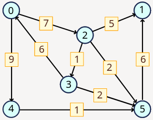
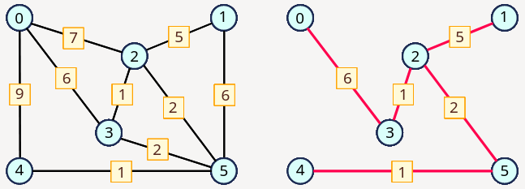

Note: both assignments for this week use the graph class implemented in Programming Assignment 9.1.
Assignment 10.1: Floyd's Algorithm (4 points)
To find the shortest distance between all pair of vertices the best solution is to use Floyd's algorithm.
Create a function floyd(graph: Graph) in Python. The function takes a Graph object as an input value and returns a \(V \times V\) matrix
(\(V\) sized list of \(V\) sized lists) containing distances between all vertex pairs (\(v_i,v_j\)). The function must work for both directed and undirected graphs.
A code template with an example program for the directed graph below:

from graph import Graph
def floyd(graph):
# TODO
if __name__ == "__main__":
matrix = [
# 0 1 2 3 4 5
[0, 0, 7, 0, 9, 0], # 0
[0, 0, 0, 0, 0, 0], # 1
[0, 5, 0, 1, 0, 2], # 2
[6, 0, 0, 0, 0, 2], # 3
[0, 0, 0, 0, 0, 1], # 4
[0, 6, 0, 0, 0, 0] # 5
]
graph = Graph(matrix)
D = floyd(graph)
for i in range(6):
for j in range(6):
print(f"{D[i][j]:2d}", end=" ")
print()
# 0 12 7 8 9 9
# 0 0 0 0 0 0
# 7 5 0 1 16 2
# 6 8 13 0 15 2
# 0 7 0 0 0 1
# 0 6 0 0 0 0
Submit your solution in CodeGrade as floyd.py including your graph class in graph.py.
Assignment 10.2: Kruskal's Algorithm (4 points)
Last week we constructed a graph with the shortest paths starting from a given vertex using Dijkstra's algorithm. Although the shortest -path graph might also be a minimal cost spanning tree (MCST), this is not guaranteed. Therefore, it is better to use an algorithm designed to produce MCST. Here we implement Kruskal's algorithm.
Create a function kruskal(graph: Graph) in Python. The function takes a Graph object as an input value and
returns a new Graph object that has only the edges that constructs the minimum spanning tree computed by Kruskal's algorithm. The created graph is undirected and
you can assume that the original graph is undirected too.
For example the on the left we have the original undirected graph and on the right we have a graph that the function produces.

A code template with an example program for the graph above:
from graph import Graph
def kruskal(graph):
# TODO
if __name__ == "__main__":
matrix = [
# 0 1 2 3 4 5
[0, 0, 7, 6, 9, 0], # 0
[0, 0, 5, 0, 0, 6], # 1
[7, 5, 0, 1, 0, 2], # 2
[6, 0, 1, 0, 0, 2], # 3
[9, 0, 0, 0, 0, 1], # 4
[0, 6, 2, 2, 1, 0] # 5
]
graph = Graph(matrix)
graph.bf_print(0) # 0 2 3 4 1 5
mst = kruskal(graph)
mst.bf_print(0) # 0 3 2 1 5 4
Submit your solution in CodeGrade as kruskal.py including your graph class in graph.py.